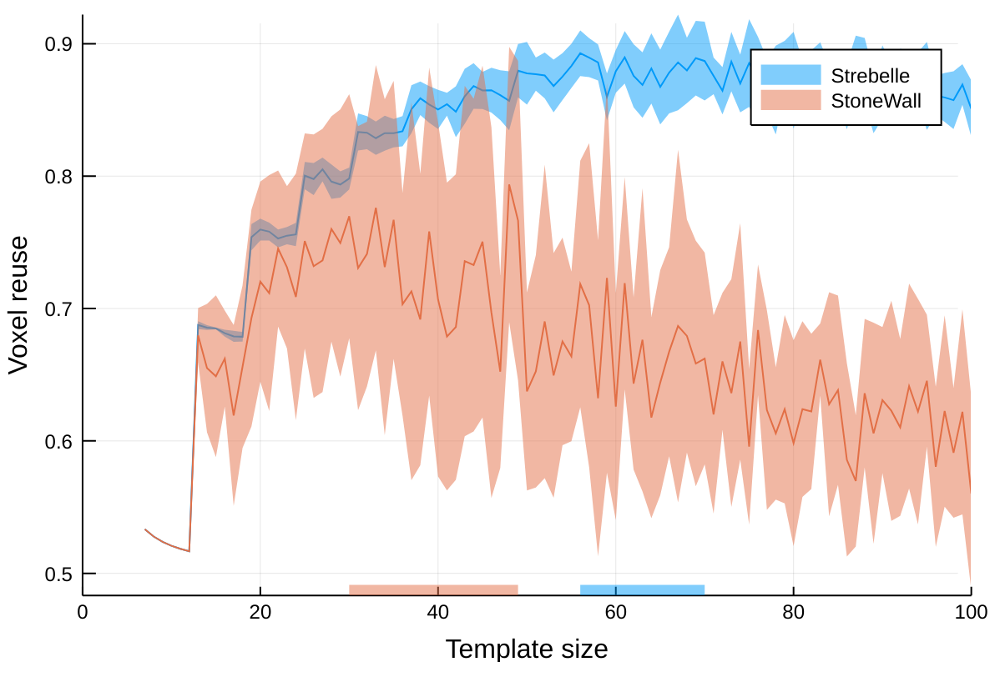

Helper function
A helper function is provided for the fast approximation of the mean voxel reuse:
ImageQuilting.voxelreuse — Functionvoxelreuse(trainimg::AbstractArray{T,N}, tilesize::Dims{N};
overlap::NTuple{N,Float64}=ntuple(i->1/6,N),
nreal::Integer=10, kwargs...)Returns the mean voxel reuse in [0,1] and its standard deviation.
Notes
The approximation gets better as nreal is made larger.
Keyword arguments kwargs are passed to iqsim directly.
Plot recipe
A plot recipe is provided for tile design in image quilting:
ImageQuilting.voxelreuseplot — Functionvoxelreuseplot(trainimg; [options])Mean voxel reuse plot of trainimg.
Available options:
tmin- minimum tile size (default to7)tmax- maximum tile size (default tominimum(size(trainimg)))overlap- the percentage of overlap (default to 1/6 of tile size)nreal- number of realizations (default to 10)rng- random number generator (default toRandom.default_rng())
In order to plot the voxel reuse of a training image, install any of the Makie.jl backends.
] add CairoMakieThe example below uses training images from the GeoStatsImages.jl package:
using ImageQuilting
using GeoStatsImages
using CairoMakie
TI₁ = geostatsimage("Strebelle")
TI₂ = geostatsimage("StoneWall")
timg₁ = asarray(TI₁, :facies)
timg₂ = asarray(TI₂, :Z)
voxelreuseplot(timg₁)
voxelreuseplot!(timg₂)